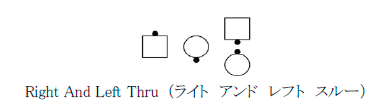

向き合っているカプルから始めるよう定義された動作も、右手のオーシャンウエイブから始めること は適切といえる。 例えば、Right And Left Thru （ライト アンド レフト スルー） と Square Thru （スクエア スルー） である。 この場合ダンサーはすでに向き合っているダンサーに一歩進んだ 位置にあり、指示された動作の残りを完了すればよい。
ダンサーを教え理解させるためには、ダンサーを向き合っているカプルの位置まで後退させ、改 めてウエイブに戻し、動作を完了してみる必要があるかもしれない。
この規則はオーシャンウエイブの規則とは呼ばれるものの、ミニウエイブ（向き合っているダンサ ー）、タイダルウエイブ（向かい合っているライン）等も概括的に含まれる。 例えば, Pass Thru （パス スルー）、 Slide Thru （スライド スルー）、 Box The Gnat （ボックス ザ ナット）、右手の １/４タッグ隊形から Double Pass Thru （ダブル パス スルー）、右手のオーシャンウエイブ隊形 から Pass To The Center （パス トゥ ザ センター）が動作可能である。
オーシャンウエイブの規則を適用するためには、動作は Box The Gnat （ボックス ザ ナット）、 Pass Thru （パス スルー）または Right Pull By （ライト プル バイ）から始まるものでなければな らない。 更に、オーシャンウエイブからは動作できないものに定義づけしてはならない。 例えば、Circulate （サーキュレイト）はエイトチェーンスルー隊形とオーシャンウエイブ隊形からと 定義付けられている。 オーシャンウエイブ隊形からCirculate （サーキュレイト）をコールし、ダン サーに互いに通り過ぎる動作をさせるとしたら、オーシャンウエイブの規則上不適切である。 当 然ダンサーはオーシャンウエイブ隊形からCirculate （サーキュレイト）の定義を適用するからであ る。
次のようなミニウエイブと向き合っているダンサーが混合した動作を始める隊形も、稀ではあるが、 適切である。

オーシャンウエイブの規則の一部である調整を行っても、その動作の結果は変わらない。 一部分を加えたり減じたりはせず、分数を使うことはない。 ミニウエイブのダンサーが一度向き合った位置に後退し、改めて動作を行うようなものである。 例えば、右手のミニウエイブから Dosado （ドーサードー）を行うと、向き合っているダンサーとして動作を終わり、右手のミニウエイブでは終わらない。
オーシャンウエイブの規則は向き合っているカプルから始まる動作にも適用される。 ダンサーが左手のオーシャンウエイブにいるときも同じである。 この場合はコーラーは左手からの動作、例えば Left Square Thru (レフト スクエア スルー）、を指示しなければならない。 第４部：付加細目：指示： Reverse Wheel Around （リバース ウイール アラウンド）の拡大解釈を参照されたい。
半分のダンサーがミニウエイブで、他の半分が向き合っているカプルの状態にあり、二人のダンサーでできる動作をコールする場合、例えばBox The Gnat （ボックス ザ ナット）、 Slide Thru （スライド スルー）、 Pass Thru （パス スルー）、コーラーは誰が（例えば Everybody=皆、 Those Facing=向かい合っている人）この動作をするのかはっきりさせる必要がある。 オーシャンウエイブの規則の適用により動作のタイミングは変わらない。
© １９９４，２０００-２０１３ CALLERLAB、国際スクエアダンスコーラーズ協会 再印刷、再出版、使用料の発生しない配布物の製作はこの文章表示を条件にこれを許可する。 使用料の発生しないインターネットでの刊行はこの文章表示を条件にこれを許可する。 使用料の発生しない一部または全ての引用はこの文章表示を条件にこれを許可する。 いかなる配布物製作または刊行においても本書内の情報は変更されまた改訂されてはならない。